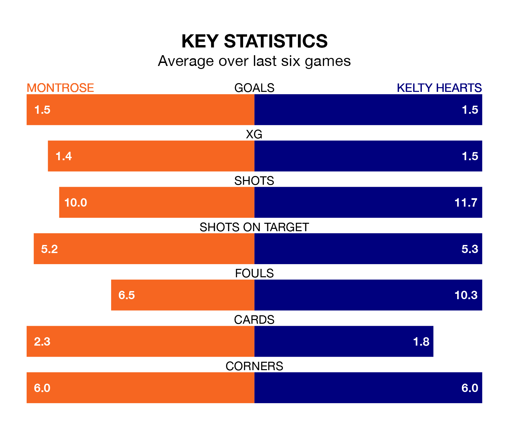

Montrose host Kelty Hearts on Saturday at Links Park in League One.
In their last league match, on February 10, Montrose beat Edinburgh City 3-0 at home, with goals from Paul Watson (two) and Aidan Quinn.
Kelty Hearts also won, 3-2 at home against Edinburgh City on Tuesday, with Joe McGlynn (two) and Ross Cunningham on the scoresheet.
With 33 goals in 23 games so far this season, Kelty Hearts are scoring at below the league average rate with 1.4 goals per game. And they are conceding at an average rate, letting in 35 goals at a rate of 1.5 per game.
Montrose, meanwhile, are average scorers, with 1.5 goals per game. They have conceded 1.4 goals per game.
In the last 10 years, Montrose and Kelty Hearts have played each other on eight occasions. Montrose won four of them, Kelty Hearts one, and they drew three times.
On average, the Gable Endies scored 1.6 goals and Kelty Hearts 1.0 in those matches.
Their last meeting was on December 16, when Montrose won 1-0 away.
In Cameron Gill, the Gable Endies can rely on one of the league's safest pair of hands. He has kept five clean sheets in his 23 appearances this season in League One.
In the away side's net, Kyle Gourlay has four clean sheets in 23 games. He has conceded a goal every 65 minutes, only slightly more often than the 67 minutes between goals for Gill.
The hosts are fifth in the table after 23 games, of which they have won nine and drawn six, earning 33 points.
Kelty Hearts are one place behind Montrose in sixth, with eight wins and seven draws putting them on 31 points.
Montrose are in mixed form in League One, with two wins and three draws from their last six games.
And also with two wins and three draws over that period, Kelty Hearts's form is identical – they have both taken nine points from 18.
Updated: 12:06 (UTC), 15/02/24